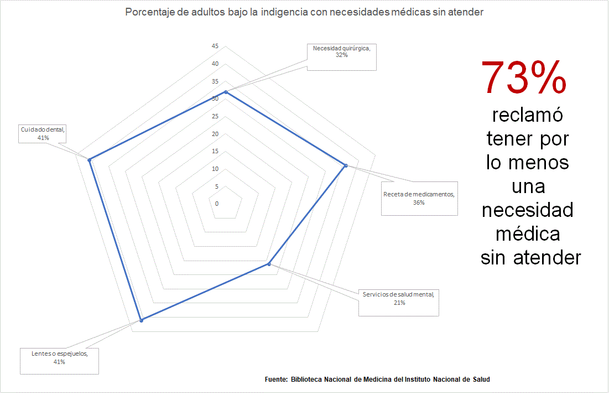

-
Sin Ayuda
La salud y la indigencia
-
Sin Tratamiento
Combatiendo la Adicción
-
Solidaridad
Familias Luchan Por su Hogar
-
Inolvidable
Veteranos sin Rumbo
-
Sin Ayuda
La salud y la Indigencia
Heather Hanson es diabética y lleva 14 meses viviendo en las calles de Phoenix.
Hanson dice que su mayor desafío ha sido mantener una dieta alimenticia saludable con la comida que brindan los centros como St Vincent de Paul y otras organizaciones religiosas sin fines de lucro. Incluso, Hanson sufrió de un coma diabético en marzo de 2018 luego de que le subieron excesivamente los niveles de azúcar.
“Todavía no estoy completamente recuperada,” dijo Hanson. “El cuerpo entra en un estado de ‘shock’ y realmente no me había dado cuenta cómo mi cuerpo estaba reaccionando a toda la comida, el azúcar y el sodio que estaba consumiendo mi cuerpo lo estaba rechazando.”
Según un estudio realizado por el Instituto Nacional de Salud, 73 por ciento de las personas que vivían bajo la indigencia padecían de por lo menos una condición médica y estaban escasos de atención médica. Desde su hospitalización Hanson asegura que ha tratado de hacer los cambios pertinentes a su dieta pero el hecho de vivir sin hogar limita excesivamente su nutrición.
“Necesito encontrar un sustituto para el azúcar, pero ahora mismo no tengo cupones así que no puedo comprar nada,” dijo Hanson.
Su solución por el momento es recibir una inyección diaria de insulina. Hanson guarda las jeringuillas en una bolsa plástica y la carga con ella diariamente en su andador.
“Siempre y cuando me encargue de que la insulina no esté mucho tiempo bajo el sol, no debo tener ningun problema pero si se calienta mucho se daña y no me lo puedo inyectar,” señaló Hanson.
La Administración de Alimentos y Medicamentos de los Estados Unidos (FDA por sus siglas en inglés) recomienda que la insulina no esté en un ambiente con temperaturas mayores de 86 grados. Sin embargo para Hanson la tarea es mucho más compleja ya que navega por las calles de Phoenix donde las temperaturas en el verano suben entre los 100 y 115 grados.
“Ya he tenido que botar la insulina varias veces porque no me voy a inyectar si no me va a hacer ningún bien,” enfatizó Hanson quien agregó que aunque las temperaturas no suben tanto, ella se encarga de constantemente supervisar sus medicamentos.
Agregó también que recientemente la ciudad de Phoenix y la policía municipal confiscó sus medicamentos como parte de una limpieza rutinaria que realizan en las intersecciones de la avenida once y la calle Madison, en las cercanías del Library Park en el Centro de Phoenix. Las personas que se refugian en las calles en los alrededores del parque dicen que cualquier artículo que no puede ser cargado y movido con facilidad queda confiscado por la policía.
VÍDEO Cada semana se lleva a cabo una limpieza en las cercanías del Centro de Refugios en el Centro de Phoenix, el cual tiende a crear preocupación entre las personas que viven en estas calles.“Yo me quedé como que, ‘no le quiten sus medicamentos porque ella acabó de salir del hospital’ y como quiera se los llevaron,” expresó David Wood, compañero de Hanson. “Gracias a Dios que tenía su pluma de insulina porque esos cuestan $125 cada uno.”
Para recibir más medicamento, Hanson debe coordinar una cita médica con su proveedor, sin embargo la falta de comunicación ha sido consistente y no le ha permitido poder establecer una cita fija con algún facilitador médico.
“Yo no sé si me van a proveer algún boleto para transportación pública para yo poder resolver todo esto, realmente no lo se,” dijo Hanson quien también asegura que ella y su pareja han sido robados en la comunidad donde viven.
“Le robaron sus medicamentos lo cual resultó en que le bajara el azúcar. Es triste porque aquí los desamparados se roban unos a los otros. Es horrible,” recalcó Wood.
Hanson siempre lleva con ella todas sus pertenencias y está constantemente navegando de calle en calle y en ocasiones deja algunas de sus pertenencias en refugios, pero dice que a veces desconfía de estos centros de acopio.
Jon Swanson vive bajo la indigencia y se refugia bajo las sombras del Library Park. Según Swanson una vez le robaron sus medicamentos y sus artículos personales que había dejado en uno de los centros.
Este refugio y otras organizaciones similares están protegidas por rejas que marcan la división con Library Park. El área es conocida como el Lodestar Resource Center, el cual provee servicios para las personas desamparadas en colaboración con el Human Services Campus. La organización también ofrece servicios de vivienda.
“Los voluntarios no son responsables. En ocasiones uno va y falta algo y lo único que te dicen es ‘disculpanos’” dijo Swanson.
Linda Stone vive con su hija, su nieta y dos sobrinas. La familia vive una batalla económica y están al borde de la indigencia. Stone no pudo continuar comprando sus tres recetas médicas de $3.35 cada una para poder ahorrar dinero. Anteriormente tomaba nueve medicamentos pero tuvo que limitar su tratamiento debido a su debacle económico.
“Aquí uno siempre tiene que mantenerse cauteloso uno no puede distraerse,”
- David Wood“Ni siquiera puedo pagar por mis medicamentos que necesito para estar saludable. Llevo casi dos años en esta lucha, sin tomar mis recetas,” dijo Stone.
Al desafío económico se suma la falta de una dirección física para recibir asistencia médica.
“Aquí uno siempre tiene que mantenerse cauteloso uno no puede distraerse,” dijo Wood.
Arthur Belyeu lleva varios años desamparado pero en el 2018 logró vivir bajo un techo con la ayuda de algunos centros que lo ayudaron a superar la indigencia y su condición cardiaca.
Esta es la segunda vez que Belyeu recibe ayuda con vivienda. El primer apartamento sufrió una inundación que lo dejó desamparado en las calles de Phoenix por lo cual Belyeu reconoce que el hecho de que ahora tiene un hogar no significa que no terminará nuevamente bajo la incertidumbre que conlleva la indigencia.
Según Belyeu, recibió una llamada de una presunta organización que le indicó que el complejo donde se hospedaba era exclusivamente para pacientes de salud mental.
“Estoy preocupado de que vaya a perder mi casa, estoy bien preocupado. Creo que mi casa está en peligro por esto. Yo te aseguro que en tres meses lamentablemente no me quedará otra opción que irme a la calle nuevamente.”
VÍDEO Arthur Belyeu shares his experience of how he turned his life around after being homeless for many years. -
Sin Tratamiento
Combatiendo la Adicción
Disfrutando la vida en miseria
La vida de Jerome Eskeets ha sido una serie de historias de supervivencia.
En Alburquerque, Nuevo México Eskeets vivió en carne propia el masacre que le cobró la vida a sus amigo Allison Gorman y a su fiel cómplice a quien conocía como ‘Cowboy’ o vaquero. Ambos formaban parte de su núcleo familiar de la calle, apoyándose mutuamente de los escollos de la indigencia.
“Apenas sobreviví. Tuve como 32 grapas en mi cabeza donde también recibí varios golpes e incluso sufrí varias fracturas,” señaló Eskeets quien se identifica como navajo.
El incidente sucedió en el 2015 y desde entonces predomina un tenebroso recuerdo que lo abruma diariamente. Fue en el 2017 cuando Eskeets decidió viajar a Arizona y donde su destino lo llevó al refugio en el siniestro de las calles de Phoenix.
“En ocasiones las personas pelean,” dijo el Eskeets mientras acariciaba su cara llena de cicatrices y sangre, resultado de un encuentro la noche anterior. “Aveces pienso que sufro de trastorno por estrés postraumático (TEPT) por lo que sucedió en Albuquerque,” señaló Eskeets con los recuerdos aún a flor de piel.
“Mi familia de la calle me ha enseñado muchísimo. Me han enseñado dónde conseguir ropa, dónde comprar comida y además cómo pedir ayuda en la calle, y diría que soy experto gracias a ellos.”
- Jerome EskeetsEskeets dice que la muerte parece ser inevitable en su vida ya que su madre y hermano fallecieron y su padre se suicidó. Su esposa, Berlinda, a quien él llama ‘Bird,’ o ave en inglés, falleció en enero de 2018. Son traumas como estos los que han llevado a Eskeets a buscar refugio en el alcohol.
“Lo único que hago es tomar. Yo trato de parar y estar sobrio, pero no puedo,” dijo Eskeets.
Es el núcleo familiar que ha desarrollado con sus amigos lo que fortalece a Eskeets y lo que lo ayuda a progresar.
“Mi familia de la calle me ha enseñado muchísimo. Me han enseñado dónde conseguir ropa, dónde comprar comida y además cómo pedir ayuda en la calle, y diría que soy experto gracias a ellos,” señaló Eskeets.
Sin embargo, la mayoría del dinero que recauda va directamente al consumo de bebidas alcohólicas las cuales dejan a Eskeets en su alcoholismo cotidiano e impulsivo para combatir su nostalgia y así poder “disfrutar la vida en plena miseria.”
Sin embargo, Eskeets ha estado al borde del suicidio más de una vez.
“Mi nivel de alcohol en la sangre era de 0.457 — me dijeron que yo debía de estar muerto,” dijo Eskeets. “Pero ya estoy acostumbrado, mi cuerpo esta acostumbrado.”
Más de 16 por ciento de las personas que sufren de la indigencia en EE.UU se identifican como usuarios de sustancia crónica, según un informe del Departamento de Vivienda y Desarrollo Urbano. En los primeros 5 meses del 2018 en el Condado Maricopa, más de 14 por ciento de los indigentes dijeron que sufren de algún desorden relacionado al consumo de sustancias, según la Asociación de Gobiernos del condado.
Más de 4 por ciento de los residentes de Maricopa se identifican como indios nativo norteamericanos. La encuesta también mostró que ellos representan el tercer grupo étnico más grande que viven sin hogar en el condado. Los que se identifican como anglosajones representan la etnia que predomina demográficamente y los que se identifican como afroamericanos representan el segundo grupo más grande.
Eskeets tiene tres hijos, y dijo que uno de ellos estudia en la Universidad Estatal de Arizona (ASU por sus siglas en inglés). También tiene dos hijos, pero él no los ha visto a ninguno de ellos hace años y no quiere que lo vean en la calle. Sin embargo Eskeets asegura que genuinamente desea combatir el alcoholismo y añora el día que se pueda reunir con sus hijos.
“Yo hago lo más que puedo para tranquilizarme y dejar de beber y regresar a mis hijos. Los extraño,” expresó Ekeets.
AUDIOLebert “Lee” Kaskalla Jr. relata los desafíos con el alcohol dentro de su familia.Lebert Kaskalla, Jr. fue criado en Zuni, Nuevo México, y reconoce su alcoholismo. Es un nativo norteamericano de la tribu Zuni, y bebía en exceso cuando era niño. Cuando era niño, su madre le ponía cerveza en su botella, y casi se reprobó de la escuela secundaria después de beber y consumir drogas.
Además el alcohol ha afectado a sus hermanos y su hermana quien tiene el síndrome de alcoholismo fetal y necesita cuidado las 24 horas del día. En el 2018, su hermano murió de intoxicación alcohólica.
En ocasiones, Kaskalla ha considerado el suicidio.
“Traté de matarme con la bebida, intoxicarme, pero todavía estoy aquí,” dijo. “Supongo que no estoy listo para morir. Tengo un propósito en la vida. No sé qué es, pero todavía estoy buscándolo,” dijo Kaskalla quien además agregó que su hija le ha rogado que deje el alcohol.
AUDIO Kaskalla Jr. nos comparte los obstáculos que enfrentó al obtener su diploma de escuela superior a sus 20 años.
La graduada
Seanna Perry nunca había estado tan feliz de escuchar a su hijo hablar de videojuegos. Es la primera conversación que tienen en dos meses.
“Es lo mejor del mundo, escuchar la voz de un pariente,” dijo Perry. “Vale la pena.”
Perry es cliente del programa de rehabilitación del Phoenix Rescue Mission donde está prohibido cualquier tipo de comunicación con familiares durante los primeros meses de tratamiento, lo cual fue uno de los retos más grandes para Perry y su batalla en contra de su adicción a la heroína.
Cuando Perry escuchó la voz de su hijo, no pudo contener las lágrimas. Pero las cosas han cambiado: Perry lleva tres años sobria y ahora ayuda a manejar un negocio.
VÍDEO Seanna Perry ha vivido bajo la indigencia y ha sufrido de adicción, sin embargo, gracias al apoyo de Mission Possible Cafe, ella ha superado ambos de estos obstaculos.En su estadía en el Phoenix Rescue Mission, una organización religiosa sin fines de lucro, Perry se matriculó en un programa vocacional, donde los clientes trabajan para conseguir un GED (por sus siglas en español) lo cual es equivalente a un diploma de preparatoria, para así continuar con sus estudios universitarios.
Allí fue donde Perry estudio el liderazgo mientras trabajaba en la cocina de la organización.
“Ofrecen una buena manera de trabajar en la vida de uno y cómo cultivar una vida a lo que puede ser o lo que uno quiere que sea,” dijo Perry.
Después de terminar el programa, Perry trabajó como subgerente de Dunkin Donuts. Luego volvió al Phoenix Rescue Mission, esta vez para trabajar en el Mission Possible Café, un subconjunto de la organización.
La cafetería sirve desayuno mientras y además brinda a sus clientes una variedad de repertorio cristiano. Como parte de su programa de superación, el negocio se dedica a contratar a personas que sufren de la indigencia y que combaten algún tipo de adicción.
Perry ha vivido ambos desafíos.
“Esto te brinda la oportunidad de dirigir tu vida en la dirección que tu deseas.”
- Seanna PerryAntes de entrar en rehabilitación, Perry vivía con su ex esposo e hijos en su carro, acampando en el desierto cuando no tenían dinero para comprar. Dijo que la indigencia y la adicción van de la mano y resulta que esta es la realidad para la población que vive sin hogar.
Aproximadamente 20 por ciento de las personas indigentes en Phoenix sufren de un trastorno por uso de sustancias, según un conteo conocido como el conteo punto en el tiempo (PIT por sus siglas en inglés).
“Uno atiende a la adicción para deshacerse de ella y luego obtener un lugar seguro para dormir,” dijo Perry.
Hay un movimiento constante de actividad en las mañanas. Mientras tanto, Perry quien es supervisora y maneja la cocina, entrena a los demás trabajadores y saluda a los clientes.
“Tengo la oportunidad de visitarlos y les brindo una sonrisa y les pregunto, ‘¿cómo está tu día?” dijo Perry.
Perry vivía en Safford, Arizona, y llegó a Phoenix después que un agente la convenció a entrar al Phoenix Rescue Mission. Inicialmente, se rehusó a la idea.
“Sabía que yo era capaz de lograr más que un trabajo en una oficina,” dijo. “Sabia que tenia que ser algo diferente y extraordinario, y creo que esto es así.”
-
Solidaridad
Familias Luchan por su Hogar
Denise Ross duerme diariamente con la preocupación de perder su comodidad en las noches, pero sobre todo de perder a su familia.
“Hay noches que no duermo y constantemente vivo con una tensión que no me deja descansar,” dijo Ross.
Según el reporte anual del Departamento de Seguridad Económica de Arizona, el número de familias desamparadas ha visto un declive mientras que algunos centros de servicios aseguran lo contrario.
“Hay noches que no duermo, así que vivo una preocupación constante.”
— Denise RossEl estudio reveló que en el Condado Maricopa, el condado más grande del estado, 16 familias sufrían de indigencia crónica lo cual significa que llevan más de un año viviendo en la calle mientras sufren también de algún impedimento físico. Mientras tanto UMOM New Day Centers, el centro más grande en Maricopa actualmente tiene más de 100 familias en la lista de espera para recibir los servicios que brinda el refugio y asegura que el número es aún mayor durante el invierno.
Por su parte, St Vincent de Paul, una organización católica sin fines de lucro, asegura que más familias han solicitado servicios alimenticios de la organización.
Según un reporte enfocado en diferentes aspectos de vivienda para los “millennials” asegura que la falta de vivienda económica para familias de bajo ingreso es porque los edificios de vivienda en el centro de Phoenix no fueron diseñados para cumplir con el estatus económico de estas familias.
El informe dice que las familias de bajo ingreso, tienen menos posibilidad de acoplarse lo cual reduce su capacidad de obtener vivienda en esta región de la ciudad.
Ross, por ejemplo, tuvo que hacer ajustes económicos el año pasado cuando el costo del alquiler de su vivienda era mucho menos de lo que paga años después.
“Tuve que dejar a un lado los préstamos, las tarjetas de crédito y mucho más. Tuve que priorizar las cuentas primordiales y más esenciales,” dijo Ross. No obstante las cuentas siguen aumentando para Ross y su familia, por lo cual han tenido que prepararse para lo peor: vivir sin hogar.
Ross vive con su hija adolescente y su sobrina. Su madre, Linda Stone de 69 años vive en un apartamento integrado en la casa de la familia Ross.
Stone dice que uno de sus mayores miedos es vivir nuevamente bajo la indigencia y que el Departamento de la Familia le quite a sus nietas aunque el departamento asegura que esto no es una causa justificada para quitar la custodia de un niño.
“Ahora mismo, tengo mucho miedo de que nos separen porque no podemos conseguir un lugar que cumpla con nuestro presupuesto,” expresó Stone, quien dice que este miedo no es nada ajeno en su travesía como persona que ha estado sin hogar en el pasado.
Cuando su hija, Ross, tenía 10 años, el Departamento de la Familia le quitó la custodia de su hija. Siete años después la familia logró reunirse nuevamente por lo cual Stone dice que fue una experiencia que no podría repetir con sus nietas.
Sin embargo, existen soluciones para familias como las de Ross y Stone. UMOM, por ejemplo, brinda refugio, comida, ropa, cuido de niños y asistencia médica para las familias que luchan diariamente para progresar.
“Ahora mismo, vivo con el miedo de que nos vayan a separar porque no podemos encontrar un lugar que caiga bajo nuestro presupuesto.”
— Denise Ross“Una familia que se encuentra en un refugio se hospedan de refugio en refugio, por lo tanto, muchas veces no logramos resolver su estatus de indigencia,” confirmó Dana Bailey, directora de UMOM . Para evitar este tipo de situación UMOM se ha dado la tarea brindar ayuda laboral para los adultos de las familias y así poder proveer a la familia con un ingreso estable a través de un empleo.
Por ejemplo, la organización ofrece un adiestramiento de seis semanas con la compañía Starbucks lo cual certifica a los participantes para trabajar en la industria de alimentos y comidas.
Además organizaciones como St Vincent de Paul asiste a familias de bajo ingreso brindándoles diariamente suministros de alimentos. Aunque la familia Ross tiene su propio hogar,la familia acoge a los servicios de St Vincent de Paul para recibir alimentos diariamente debido a su situación financiera.
Juventud
La vulnerabilidad de la indigencia no se limita solamente a familias y es que resulta que en el 2017, un total de 40,799 jóvenes a través de los Estados Unidos vivían desamparados en las calles. El Departamento de Vivienda y Desarrollo Urbano define a un joven como cualquier persona menor de 25 años.
En Maricopa, el número de jóvenes sin hogar ha incrementado según la Asociación de Gobiernos del condado. Cameron Robinson de 22 años de edad vive en el Centro de Refugios de Arizona (CASS por sus siglas en inglés) en el recinto del Centro de Phoenix. Robinson pasó a vivir sin hogar después de que su mamá falleciera de un ataque al corazón.
Robinson dice que CASS no es el lugar ideal para vivir. El joven asegura que el centro necesita más mantenimiento y que los guardias de seguridad no tiene ningún tipo de empatía hacia los que se refugian en las facilidades.
“Yo vine aquí y voy poco a poco trabajando para ahorrar y poder encontrar un mejor lugar para vivir que esté bajo mi presupuesto,” dijo Robinson.
Varios programas en Phoenix trabajan arduamente para asistir a jóvenes como Robinson que buscan superarse económicamente y personalmente. El programa Homeless Youth Connection ofrece suministros tantos como alimentos y materiales escolares, al igual que asistencia médica.
Aproximadamente 70 por ciento de los estudiantes en el programa viven con familias que sufren de la indigencia. Para mayo del 2018, el programa tenía cerca de 650 estudiantes.
Kayla McCullough, directora del programa, dice que para el año entrante se espera que la organización ayude a más de 800 estudiantes: “Si ayudas a jóvenes en la escuela superior a combatir su indigencia, más probabilidad existe de que reduzcamos el número de adultos desamparados.”
Ross se prepara para posiblemente mudarse de su casa, sin embargo ella exhorta a su hija progrese a través de la educación. Luego de graduarse de la escuela superior, su hija tiene planes de ir a la Universidad Estatal de Arizona para estudiar veterinaria.
“Yo les he dicho a mis hijos desde pequeños que tienen que terminar la escuela superior y les recuerdo constantemente que hoy día tienen que ir a la universidad,” dijo Ross. “De lo contrario, no lograrás mucho en la vida.”
VÍDEO Melissa Breaux y John Culpepper llevan 20 años de casados y viven bajo la indigencia desde noviembre de 2017. -
Inolvidable
Veteranos Sin Rumbo
David Donaldson, luchó arduamente en acoplarse a su vida cotidiana,tras servir en la Guardia Nacional.
Donaldson comenzó a presentar síntomas de trastorno por estrés postraumático, también conocido como TEPT, lo cual llevó a Donaldson a refugiarse en el alcohol. Según Donaldson, el camino de la indigencia tomó rumbo bajo su propia voluntad ya que vivía con un amigo que tenía niños en la casa.
“Yo no quería afectarlos a ellos de ninguna forma negativa por causa de mi situación y lo que yo estaba viviendo,” expresó.
VÍDEO David Donaldson, veterano de Iraq, relata su experiencia manejando sus síntomas de trastorno por estrés postraumático (TEPT).Por seis meses, Donaldson continuó su vida desamparada y en plena incertidumbre sin saber a diario qué comería y a pesar de tener su propia familia, Donaldson aún siente el vacío en su vida.
“Yo creo que una vez una persona de las fuerzas armadas ya no tiene una misión, se pierde cualquier tipo de esperanza,” relató Donaldson.
Según el reporte anual del Departamento de Seguridad Económica, en el 2017 se reportó que 204 veteranos vivían desamparados en Arizona.
En el caso de Donaldson, él decidió integrarse a la Guardia Nacional en Arizona el cual él dice le sirvió para encontrar su propósito.
A pesar de la tempestad que agobió su pasado, Donaldson aprendió a usar sus experiencias para servir como especialista certificado a través del Centro de Asistencia para Veteranos Sin Hogar del Departamento de Asuntos para Veteranos.
“Yo conozco los desafíos de estar en la calle: ¿Qué vas a comer, dónde vas a dormir si la temperatura está a 110, 115 o 120 grados afuera?,” dijo Donaldson mientras hacía referencia a su travesía sin vivienda.
Donaldson coordina servicios para veteranos que padecen de TEPT y adicción. Su especialidad consiste en asistir a veteranos sin hogar que presentan síntomas de suicidio. Donaldson dice que lo más difícil es ayudar a alguien que ha llegado a su límite y ha perdido el deseo de progresar.
“Realmente se trata de tener algún tipo de conexión humana cuando regresas de alguna guerra, porque muchas de nuestras relaciones sufren por esto mismo,” expresó Donaldson. “Siendo veterano, uno tiene la mentalidad de que esta será nuestra misión hasta el día que uno muera.”
“Cuando uno es veterano, uno piensa que uno tiene una misión hasta el día que muera.”
- David DonaldsonEl centro brinda servicios tales como atención médica, servicios de salud mental y oportunidad de empleo para veteranos.
Jeff Willgale, coordinador del programa de Asistencia para los veteranos sin hogar, dice que los veteranos deben entrenarse para regresar a su comportamiento civil luego de servir en las fuerzas armadas.
“Nosotros tratamos de integrar el protocolo militar cuando llegan al principio y les recordamos que ahora son ciudadanos común y corriente y que ya pueden bajar la guardia,” indicó Willgale.
Michael Ayres, veterano del ejército, lleva una semana viviendo bajo la indigencia en las calles del Centro de Refugios de Arizona en el Centro de Phoenix.
En el caso de Ayres, la indigencia llegó como resultado de sus síntomas de TEPT y cómo esto confligía con la vida cotidiana de sus familiares. Según Ayres, en las cercanías de las calles en donde él tiende a refugiarse, diariamente hay de cinco a diez veteranos a la vez.
VÍDEO Michael Ayres, quien siempre vive acompañado por su perro Mary Jane, comparte cómo combate la indigencia y su salud mental y además habla sobre los servicios disponibles para veteranos como él.“Ella me ayuda muchísimo y honestamente ya que no puedo recibir mi tratamiento a través de medicamentos, terapias y otras formas de tratamiento, ella es la que me ha ayudado mantener mi cordura y a mantener la calma,” señaló Ayres de 39 años.
Gayle Shelton tiene 69 años y es veterana del ejército que bajo la indigencia.
AUDIO Gayle Shelton dice que ser veterano e indigente se complica mucho más cuando uno es mujer.“Creo que físicamente es más difícil para las mujeres estar sin hogar y en la calle,” expresó Shelton quien es cliente de uno de los refugios en el Centro de Phoenix. Para Shelton, son los centros de servicios para los desamparados lo que la ha ayudado con sus condiciones médicas y además dice que uno de los mayores retos es caminar por la ciudad con su andador.
Es por esto que Shelton exige que el municipio acople medidas más inclusivas para personas como ella que sufren de algún impedimento físico. Por ende Shelton agradece el centro que la ayuda con estos desafíos.
“La persona que me cuida a veces se tarda como una hora y media atendiendome,” recalcó la veterana quién dice simplemente exigir el respeto mutuo. “Él toma de su tiempo para contestar todas mis preguntas. Nunca me he sentido menospreciada por él.”
“A la gente se le olvida lo que es ser humano.”
-David DonaldsonDonaldson señaló también que existen muchos malentendidos y estereotipos negativos sobre la indigencia.
“Creo que realmente tiene que ver con el hecho de que a la gente se le olvida lo que es ser humano,” dijo Donaldson, quien a pesar de vivir varios de los desafíos que conlleva la indigencia tales como el TEPT, siempre decidió mantener la esperanza.
“Yo se que yo tengo compañeros que lamentablemente fallecieron en el campo y por respeto hacia ellos, no me doy por vencido. Quedarme sin hacer nada, nunca ha sido una opción,” dijo Donaldson.
VÍDEO David Donaldson, veterano de Iraq, relata cómo su experiencia como veterano lo ayuda a ayudar a otros que combaten lo que él pudo superar.